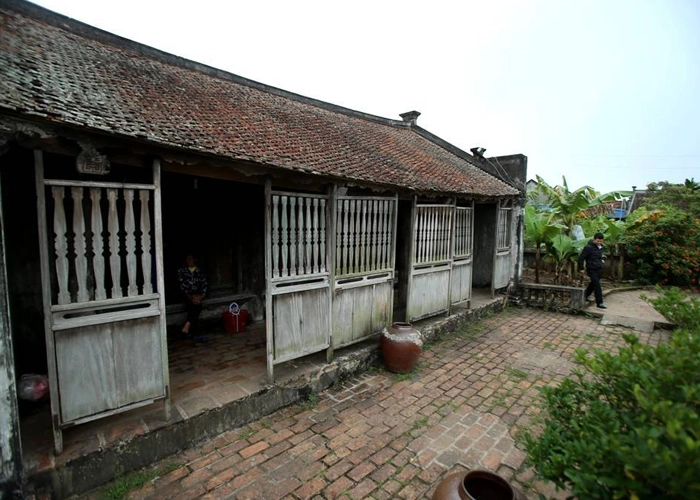
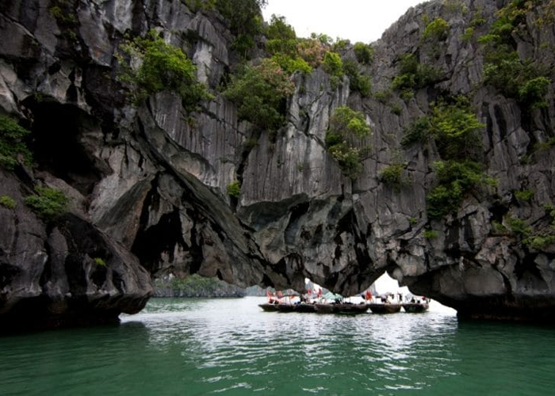
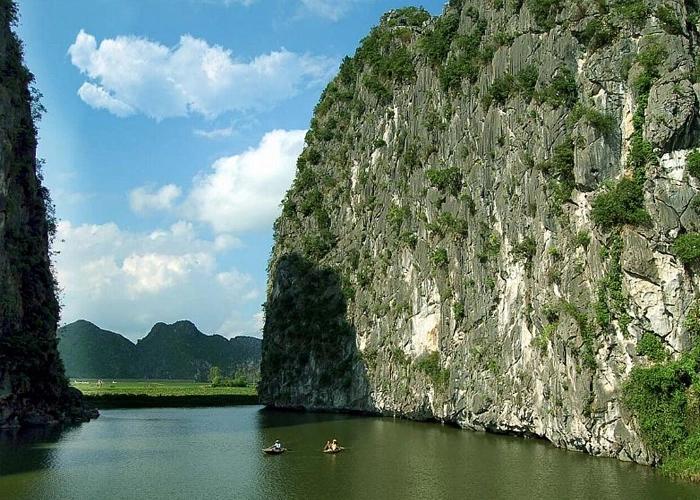

Các danh lam thắng cảnh
|  |  |  | |
| Nhà Bá Kiến - Địa điểm du lịch Hà Nam từng xuất hiện trong tác phẩm văn học nổi tiếng | Ao Dong - Hang Luồn thường là 2 địa điểm du lịch Hà Nam không thể tách rời. | Động Phúc Long nằm trong khu núi Chùa thuộc trung tâm dãy núi Kiện Khê | Bát Cảnh Sơn - Địa điểm du lịch Hà Nam với vẻ đẹp thiên nhiên hoang sơ |